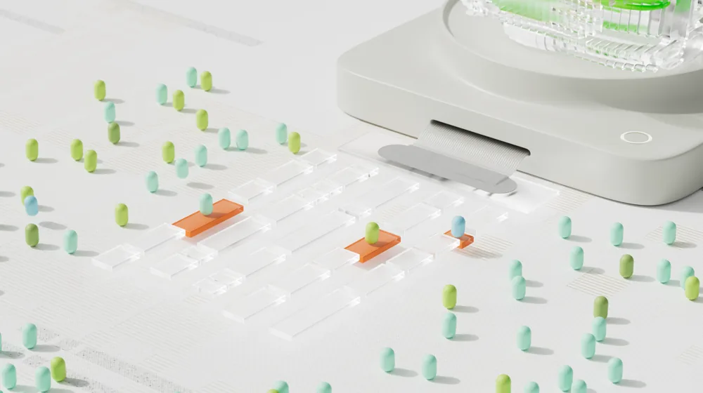

생성형 AI, 무료 vs 유료? 핵심 차이점부터 현명한 선택 기준까지
사진: Google DeepMind / Pexels (무료 이미지, 출처 표기)
생성형 AI, 무료로 충분할까?

새로운 아이디어를 얻거나 업무 효율을 높이기 위해 생성형 AI 서비스 도입을 고민하고 계신가요? 많은 사람이 무료 AI 서비스로 충분한지, 아니면 유료 버전을 구독해야 할지 판단하기 어려워합니다.
무료 생성형 AI는 진입 장벽이 낮아 누구나 쉽게 시작할 수 있다는 장점이 있습니다. 간단한 문서 작성, 아이디어 브레인스토밍, 기본적인 정보 검색 등 일상적인 작업에는 충분히 활용될 수 있습니다. 하지만 특정 작업이나 전문적인 용도로는 한계가 명확할 수 있습니다.
유료 생성형 AI만의 특별한 강점은?
유료 생성형 AI 서비스는 무료 버전에서 제공하지 않는 다양한 고급 기능과 더 나은 성능을 제공합니다. 이는 생산성과 효율성을 극대화하려는 사용자나 기업에 특히 유용합니다.
주요 강점으로는 더 넓은 '컨텍스트 윈도우'(AI가 한 번에 처리하고 기억할 수 있는 정보의 양), 최신 모델 접근 권한, 고급 편집 및 맞춤 설정 기능, 그리고 안정적인 API(Application Programming Interface) 지원 등이 있습니다. 이를 통해 더 복잡하고 긴 작업을 원활하게 처리할 수 있습니다.
무료 vs 유료, 핵심 기능 비교표 (2026년 8월 기준)
생성형 AI 서비스의 무료 버전과 유료 버전 간 주요 차이점을 한눈에 비교해 보세요. 아래 표는 일반적인 경향을 나타내며, 각 서비스 제공업체에 따라 세부 내용은 다를 수 있습니다. 정확한 사항은 각 서비스의 공식 홈페이지에서 확인하시길 권장합니다.
나에게 맞는 생성형 AI 선택 가이드
생성형 AI를 선택할 때는 자신의 사용 목적과 예산을 고려하는 것이 중요합니다. 다음 질문들을 통해 어떤 서비스가 적합한지 판단해 보세요.
- 단순 업무 보조 및 학습용인가요? 가벼운 글쓰기, 아이디어 구상, 정보 탐색 등이라면 무료 서비스로도 충분합니다.
- 전문적인 작업이나 비즈니스 용도인가요? 고품질 콘텐츠 생성, 데이터 분석, 프로그래밍, 장문 문서 요약 등이라면 유료 서비스가 더 효율적입니다.
- 개인 정보 보호 및 보안이 중요한가요? 민감한 데이터를 다루는 경우, 데이터 학습 제외 옵션과 강화된 보안을 제공하는 유료 서비스가 바람직합니다.
- 예산은 얼마나 책정되어 있나요? 초기에는 무료 서비스를 사용해보고, 필요에 따라 유료 전환을 고려하는 유연한 접근도 좋습니다.
생성형 AI 사용 시 주의할 점 및 팁
생성형 AI를 활용할 때 몇 가지 주의할 점을 염두에 두면 더 효과적이고 안전하게 사용할 수 있습니다.
첫째, AI가 생성한 정보는 항상 사실 확인 과정을 거쳐야 합니다. 특히 민감하거나 중요한 정보의 경우, AI의 답변을 맹신하기보다 다른 신뢰할 수 있는 출처를 통해 교차 확인하는 습관을 들이세요. AI는 때때로 '환각(hallucination)' 현상으로 인해 잘못된 정보를 사실처럼 제시할 수 있습니다.
둘째, 개인 정보 및 기업 기밀 정보 입력에 신중해야 합니다. 대부분의 AI 서비스는 사용자 프롬프트를 모델 학습에 활용할 수 있습니다. 민감한 정보는 가급적 입력하지 않거나, 유료 서비스의 데이터 비학습 옵션을 적극적으로 활용하는 것이 좋습니다. 셋째, 다양한 AI 서비스를 경험해보고 자신에게 가장 잘 맞는 도구를 찾아보세요. 각 AI 모델마다 특장점이 다르므로, 여러 서비스를 시험해본 후 결정하는 것이 현명합니다.
🔗 이 글도 함께 보면 좋아요: 포토샵 유료 구독 없이도 전문가처럼? 무료 이미지 편집 프로그램 5가지 비교